ANOVA
Ben Miner and Matthew Zinkgraf
2022-09-21
ANOVA
Analysis of variance (ANOVA) is a specific type of linear model in which the predictor variable is a character and the response variable is numeric. Linear models are a large group of statistical models that are very common in biological sciences. The test statistic for linear models is the F-ratio. The distribution of the F-ratio (also called the F value) when the null hypothesis is true is described by the F distribution, and thus the P-value of a F-ratio is calculated from the F distribution. Many other common statistical tests used by biologists are direct extensions of ANOVA (e.g., 2-factor ANOVA, and ANCOVA (analysis of covariance)).
1 Null and alternative hypotheses
You are only able to answer two-sided hypotheses with ANOVA–ANOVA is always a one-tailed test (the right, positive tail). The null and alternative are always the following.
- Null hypothesis: true population means are equal, or \(\mu_1 = \mu_2 \ldots \mu_k\)
- Alternative hypothesis: not the null hypothesis
Remember that only two groups need to differ to reject the null.
2 Data format
It is best to format your data with two columns, one for the predictor and one for response variable, with each row representing an independent replicate (or observation). This is one of the common formats for a two-sample t-test. Researchers typically enter their data into Excel and then import into R a csv or Excel file.
3 Flower morphology example
Let’s analyze the data from the iris dataset that is included in R. Because the data is already in R (it is loaded with the base packages), and we do not need to import these data. This dataset includes 4 numeric metrics of flower morphology for three species. An ANOVA is an appropriate test if we are interested in how the average of one of these metrics differs among the three species. Let’s first look at the structure of the dataset.
str(iris)## 'data.frame': 150 obs. of 5 variables:
## $ Sepal.Length: num 5.1 4.9 4.7 4.6 5 5.4 4.6 5 4.4 4.9 ...
## $ Sepal.Width : num 3.5 3 3.2 3.1 3.6 3.9 3.4 3.4 2.9 3.1 ...
## $ Petal.Length: num 1.4 1.4 1.3 1.5 1.4 1.7 1.4 1.5 1.4 1.5 ...
## $ Petal.Width : num 0.2 0.2 0.2 0.2 0.2 0.4 0.3 0.2 0.2 0.1 ...
## $ Species : Factor w/ 3 levels "setosa","versicolor",..: 1 1 1 1 1 1 1 1 1 1 ...Let’s say that we want to test whether there are any differences in the mean length of flowers among the three species. It is appropriate to analyze these data with an ANOVA because the predictor variable, species, is categorical, and the response variable, flower length, is numeric.
- \(H_0\): \(\mu_{setosa}=\mu_{versicolor}=\mu_{virginica}\)
- \(H_A\): Not \(H_0\)
4 By hand
4.1 Test statistic
Below are the equations to calculate the sum of squares, mean squares, and degrees of freedom for within and among the groups for the above data. In the textbook, the authors use the term groups to represent the among group error, and the term error to describe the within group error. Below, I use the terms among and within, instead of groups and error. Both are common, so you need to practice thinking about both sets of terms. Recall the following equations from lecture? Hopefully you do because they are important.
\[ {SS}_{among}=\Sigma_{j=1}^{a}\Sigma_{i=1}^{n} (\bar{Y}_{j}-\bar{Y})^2 \]
\[ {SS}_{within}=\Sigma_{j=1}^{a}\Sigma_{i=1}^{n} (Y_{j,i}-\bar{Y}_{j})^2 \]
\[ {df}_{among}=a-1 \]
\[ {df}_{within}=a\times(n-1) = N - a \]
An ANOVA should be balanced, and have the same number of replicates per treatment. However, if the design is slightly unbalanced, you can still use an ANOVA, but should use the \(N - a\) equation to determine the correct degrees of freedom for the within group error.
\[{MS}_{among}=\frac{{SS}_{among}}{{df}_{among}}\]
\[{MS}_{within}=\frac{{SS}_{within}}{{df}_{within}}\]
where \(a\) represents the number of groups (the book uses \(k\) instead of \(a\)) and \(n\) represents the number of replicates (or observations) in each treatment. The total number of observations is often represented by \(N\).
You will find different forms for the equations above. For example, the book has different equations to calculate the mean squares. All these forms are the same equation just rearranged. I prefer the above equations because they represent the logic of the calculation. However, they tend to inflate rounding errors if you use a calculator. You are welcome to use which ever equation that make the most sense to you.
You will want to calculate the means for each group and the grand mean, so you can use the above equations. If you recall, this is easily accomplished with the function tapply().
(means <- tapply(iris$Petal.Length, iris$Species, mean))## setosa versicolor virginica
## 1.462 4.260 5.552#Or you can use the function with() so you don't have to write iris so often
(means <- with(iris, tapply(Petal.Width, Species, mean)))## setosa versicolor virginica
## 0.246 1.326 2.026Recall that hard brackets [ ] allow you to pull data from a vector or data.frame.
#A data.frame with only the rows for the setosa
setosa <- iris[iris$Species == "setosa", ] #Notice I need two arguments (first for rows and second for columns)
head(setosa)## Sepal.Length Sepal.Width Petal.Length Petal.Width Species
## 1 5.1 3.5 1.4 0.2 setosa
## 2 4.9 3.0 1.4 0.2 setosa
## 3 4.7 3.2 1.3 0.2 setosa
## 4 4.6 3.1 1.5 0.2 setosa
## 5 5.0 3.6 1.4 0.2 setosa
## 6 5.4 3.9 1.7 0.4 setosa#A vector with the petal lengths only for setosa
(setosa_lengths <- iris$Petal.Length[iris$Species == "setosa"])## [1] 1.4 1.4 1.3 1.5 1.4 1.7 1.4 1.5 1.4 1.5 1.5 1.6 1.4 1.1 1.2 1.5 1.3 1.4 1.7
## [20] 1.5 1.7 1.5 1.0 1.7 1.9 1.6 1.6 1.5 1.4 1.6 1.6 1.5 1.5 1.4 1.5 1.2 1.3 1.4
## [39] 1.3 1.5 1.3 1.3 1.3 1.6 1.9 1.4 1.6 1.4 1.5 1.4You should use these functions to calculate the sum of squares, mean squares, and F-ratio for these data. I did not provide the code, so you can practice thinking about how to develop the code yourself, but make sure to ask if you are confused or get stuck!
Let’s now look at the F distribution, so we can convert a F-ratio to a P value.
4.2 F distribution and P values
The distribution of F values when the null hypothesis is true is given by the F distribution. We use the F distribution to convert a F value to a P value. Like the Chi-squared distribution, we are only interested in the right-hand (or positive) tail of the distribution, and thus an ANOVA is a one-tailed test (which can only test two-sided hypotheses).
Let’s first explore the F distribution. Plot the F distribution and change the two parameters needed to describe its shape (the degrees of freedom for the numerator (among group df) and the degrees of freedom for the denominator (within group df)). You have already done this in past labs for other distributions. Here I show you how to specify the size of a new window to view our graph with the function windows() for PCs, and the function quartz() for Macs. I set the width of the window to 4 inches and the height to 8 inches. Recall that par() allows the user to change the graphic parameters. In this case, I use the argument mfrow to split the graphing window into two panels (2 rows and 1 column). I also use the argument mar to set the figure margins in terms of number of lines. You start with the bottom and work clockwise. So, with the code below, I set the bottow margin to 4.5 lines, the left margin to 4.5 lines, the top margin to 0.5 lines, and the right margin to 0.5 lines.
## #Open a window so two graphs fit one above the other
## windows(width=4, height=8) #For PCs
## qartz(width = 4, height = 8) #For Macs
#Split the window to plot two graphs and adjust the figure margins
par(mfrow=c(2, 1), mar=c(4,4,0,0)+0.5)
#PDF of the F distribution with 2, 9 degrees of freedom
curve(df(x, 2, 9), 0, 10, ylim=c(0, 1), xlab = "F", ylab="Density")
#CDF of the F distribution with 2, 9 degrees of freedom
curve(pf(x, 2, 9), 0, 10, ylim=c(0, 1), xlab = "F", ylab="Prob")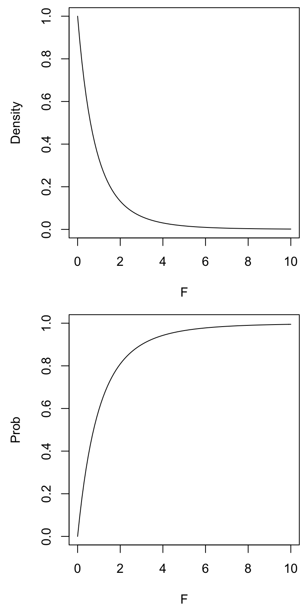
Here is a more advanced example of how to visualize what happens to the F distribution when you change the degrees of freedom. We already learned about almost all these functions in previous labs. This might require a little time to think through the code (and might be something better done later), but you should understand it. Remember that just copying what I have done will not help you in the future when you need to figure out what to do on your own.
## windows(width = 4, height = 8)
## quartz(width = 4, height = 8)
par(mfrow = c(2, 1), mar = c(4,4,0,0) + 0.5)
#Adjust the degrees of freedom for the within group error (i.e., denominator)
df.num <- 10
n <- 8
(df.den <- cumprod(1:n) )## [1] 1 2 6 24 120 720 5040 40320(my.colors <- rainbow(n) )## [1] "#FF0000" "#FFBF00" "#80FF00" "#00FF40" "#00FFFF" "#0040FF" "#8000FF"
## [8] "#FF00BF"curve(df(x, df.num, 1), 0, 6, ylab="Density", xlab = "F", ylim = c(0, 1))
for(i in 1:n) curve(df(x, df.num, df.den[i]), col=my.colors[i], add=TRUE)
legend(3, 1, df.den[1:n], lty = rep(1, n), col = my.colors, title = "within error df", bty = "n")
curve(pf(x, df.num, 1), 0, 6, ylab = "Probability", xlab = "F", ylim = c(0, 1))
for(i in 1:n) curve(pf(x, df.num, df.den[i]), col = my.colors[i], add = TRUE)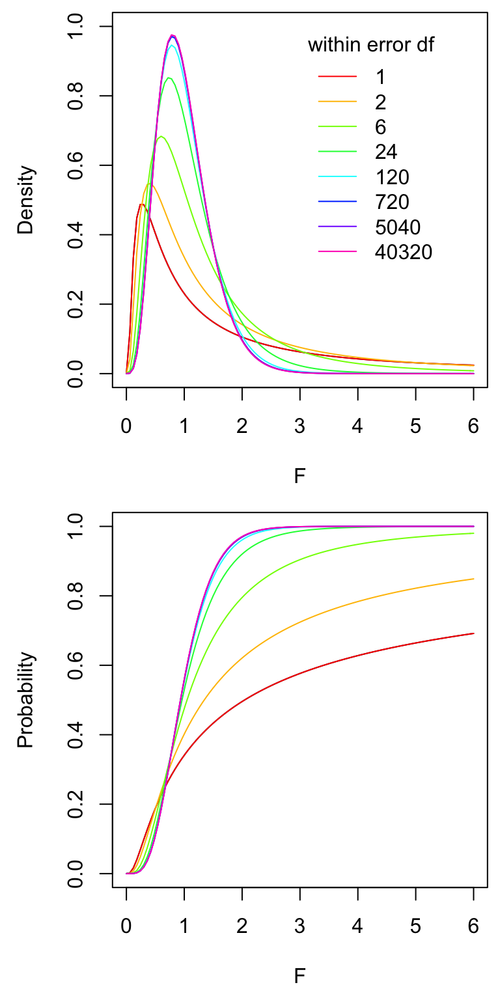
#Adjust the degrees of freedom for the among group error (i.e., numerator)
df.den <- 10
n <- 8
(df.num <- cumprod(1:n) )## [1] 1 2 6 24 120 720 5040 40320(my.colors <- rainbow(n) )## [1] "#FF0000" "#FFBF00" "#80FF00" "#00FF40" "#00FFFF" "#0040FF" "#8000FF"
## [8] "#FF00BF"curve(df(x, 1, df.den), 0, 6, ylab = "Density", xlab = "F", ylim = c(0, 1))
for(i in 1:n) curve(df(x, df.num[i], df.den), col = my.colors[i], add = TRUE)
legend(3, 1, df.num[1:n], lty = rep(1, n), col = my.colors, title = "among group df", bty = "n")
curve(pf(x, 1, df.den), 0, 6, ylab="Probability", xlab = "F", ylim = c(0, 1))
for(i in 1:n) curve(pf(x, df.num[i], df.den), col = my.colors[i], add = TRUE)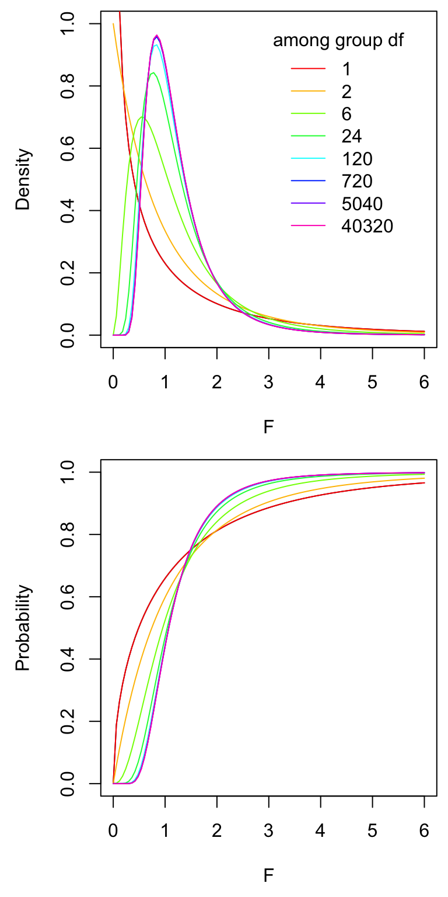
Now you can use the F distribution to calculate a P-value, or a critical value. Let’s assume that you caclulated an F-ratio of 5.6 (this is not the correct answer though, just made it up). The among group degrees of freedom are 2 (3 groups minus 1), and within degrees of freedom are 147 (n is 50 and we have 3 groups, 3*(50 - 1)).
1 - pf(5.6, 2, 147)## [1] 0.004530518#Or we can use the lower.tail argument, same as above
pf(5.6, 2, 147, lower.tail = FALSE)## [1] 0.004530518We only need to worry about the right, positive tail when calculating the critical value for an ANOVA. So, we are after 5% of the area under the right tail, or 95% of the area under the left tail.
qf(0.95, 2, 147)## [1] 3.0576215 lm() and aov()
Now let’s get serious. We first fit a linear model to the data and ask for R to produce the ANOVA table. There are two functions that we can use to fit a linear model, lm() and aov(). Both are commonly used, but aov() has a few benefits, like you can easily caculate run a Tukey-Kramer test after using aov()–aov() is a wrapper for lm(), which means that it actually uses lm() to calculate the linear model fit.
Both functions require the same two arguments, a formula and the data.frame from which to pull the data. The formula (or model) tells R which variable is the response variable (first in the formula) and which variable is the predictor (second in the formula). The response and predictor variables are separated with ~ (upper, left side of your keyboard). The ~ sign is equivalent to the “=” sign for models in R. Formulas are heavily used in most statistical functions in R (and other programs).
After we use lm() or aov(), we want to see the ANOVA table to determine whether to reject or fail to reject the null hypothesis. We use either the function anova() or summary(), depending on which function we used to create the fit. If we first fit with lm(), then we use anova(). If we first fit with aov(), then we use summary(). Here we go! First with lm() and then aov().
fit_lm <- lm(Petal.Length ~ Species, iris)
anova(fit_lm)## Analysis of Variance Table
##
## Response: Petal.Length
## Df Sum Sq Mean Sq F value Pr(>F)
## Species 2 437.10 218.551 1180.2 < 2.2e-16 ***
## Residuals 147 27.22 0.185
## ---
## Signif. codes: 0 '***' 0.001 '**' 0.01 '*' 0.05 '.' 0.1 ' ' 1fit_aov <- aov(Petal.Length ~ Species, iris)
summary(fit_aov)## Df Sum Sq Mean Sq F value Pr(>F)
## Species 2 437.1 218.55 1180 <2e-16 ***
## Residuals 147 27.2 0.19
## ---
## Signif. codes: 0 '***' 0.001 '**' 0.01 '*' 0.05 '.' 0.1 ' ' 1You will notice they are produce the same output (an ANOVA table).
You can check your calculations by hand against the values from the ANOVA table. Do the values you calculated by hand match the results above? They should (or be very close).
And that is all there is to it!
6 Displaying data
Just like for a two-sample t test, barplots (with error bars) and boxplots are the most common way to display data analyzed with an ANOVA. Below I review how to make graphs with the base functions and ggplot2 functions.
Making a boxplot is especially easy because R knows that a boxplot is an excellent graph when the predictor variable is categorical and the response is numeric. We therefore just need to ask R to plot the data using the function plot(), which calls the boxplot() function when the predict is categorical and the response is numeric. The two arguments that are needed for plot() (or the function boxplot()) are the same two arguments that we used for lm() and aov(), which are the formula and the data.frame. So, easy, which I love!!!
plot(Sepal.Length ~ Species, iris)
We could also use boxplot(), which will give us the same graph.
plot(Sepal.Length ~ Species, iris)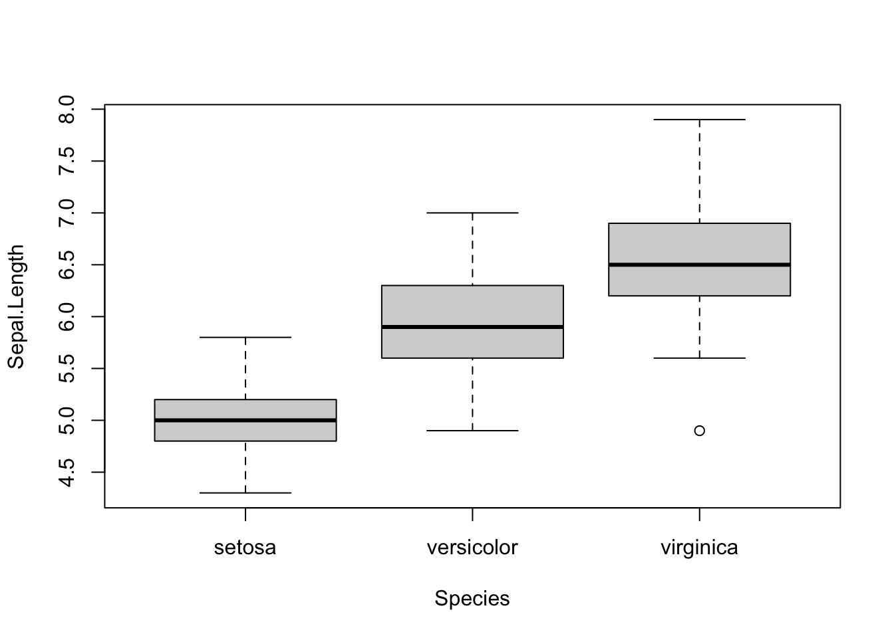
To make a barplot with error bars, we use the function barplot() and arrows(). The function barplot() requires a vector with the heights of the bars. In our case that is the mean of each group. We can name the barplot object, which will provide us with the x coorinates for the center of each bar in the graph. The function arrows() requires the x and y coordinates for each error bar. So, we need to also calculate whatever measure of spread we want to plot. I will plot standard error in the example below.
iris_means <- with(iris, tapply(Sepal.Length, Species, mean))
iris_se <- with(iris, tapply(Sepal.Length, Species, function(x) sd(x)/sqrt(length(x))))
#You often need to adjust the y axis to include the tops of the error bars
x_vals <- barplot(iris_means,
ylim = c(0, 8),
ylab = "Sepal Length (units)"
)
arrows(x_vals, iris_means + iris_se, x_vals, iris_means - iris_se, angle = 90, code = 3)
#If I want to put a box around it
box()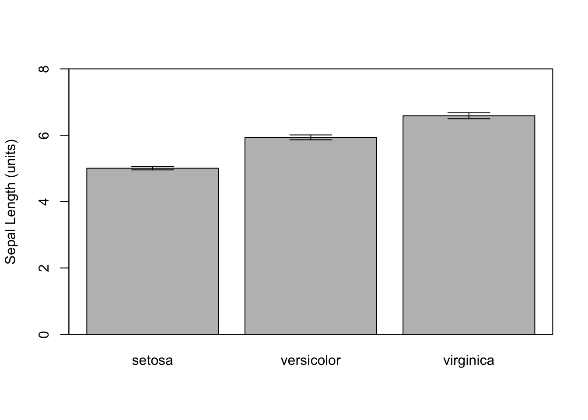
Now let’s make similar graphs using the package ggplot2. If you use haven’t practiced using this package, then please look at the ggplot2 link under Graphing at the top of this page. Making a boxplot is also very easily with ggplot2
library(ggplot2)
ggplot(iris, aes(x = Species, y = Sepal.Length)) +
geom_boxplot()
Make a barplot with error bars is also easy in ggplot2. The advantage of using ggplot2 is that we don’t need to calculate the means or measures of spread–we have the plotting function do it for us.
ggplot(iris, aes(x = Species, y = Sepal.Length)) +
geom_bar(stat = "summary", fun.y = "mean") +
geom_errorbar(stat = "summary", fun.data = "mean_se", width = 0.2) +
ylab("Sepal length (units)")## Warning: Ignoring unknown parameters: fun.y## No summary function supplied, defaulting to `mean_se()`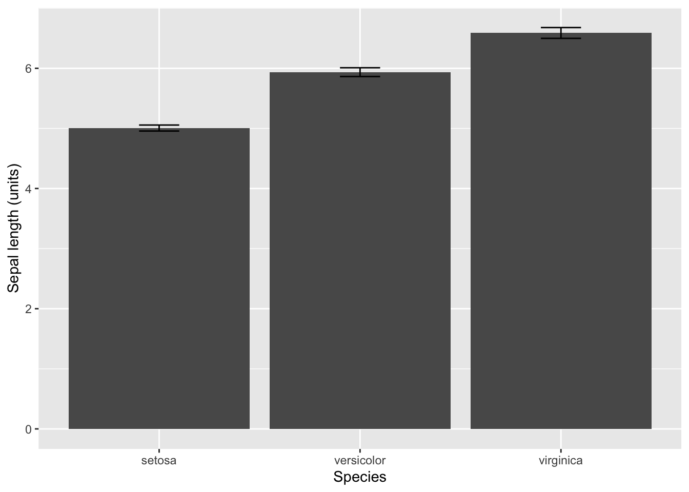
You can also make the same plot, but using the stat_summary() function. In this case, you give the geom as an argument. Either using stat_summary() or geom_bar() and geom_errorbar() produce exactly the same graph, and I only provide both examples to illustrate that ggplot2 is very flexible.
ggplot(iris, aes(x = Species, y = Sepal.Length)) +
stat_summary(geom = "bar", fun.y = "mean") +
stat_summary(geom = "errorbar", fun.data = "mean_se", width = 0.2) +
ylab("Sepal length (units)")## Warning: `fun.y` is deprecated. Use `fun` instead.If you install and load the Hmisc package, then you can use stat_summary to calculate the error bars that represent standard deviation, confidence intervals, and min-max (as well as others). You only have to switch the function for the argument fun.data. Use mean_sdl to calculate and plot the standard deviation, and use mean_cl_normal to calculate and plot the 95% confidence interval.
#Requires the Hmisc package
#Plot standard deviation
ggplot(iris, aes(x = Species, y = Sepal.Length)) +
stat_summary(geom = "bar", fun.y = "mean") +
stat_summary(geom = "errorbar", fun.data = "mean_sdl", width = 0.2) +
ylab("Sepal length (units)")## Warning: `fun.y` is deprecated. Use `fun` instead.## Warning: Computation failed in `stat_summary()`: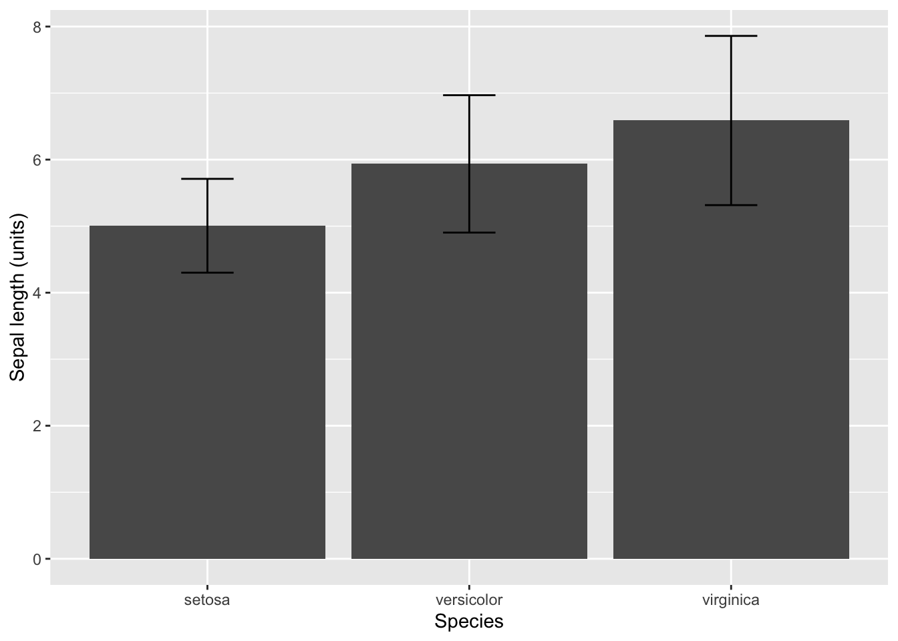
#Plot 95% confidence intervals
ggplot(iris, aes(x = Species, y = Sepal.Length)) +
stat_summary(geom = "bar", fun.y = "mean") +
stat_summary(geom = "errorbar", fun.data = "mean_cl_normal", width = 0.2) +
ylab("Sepal length (units)")## Warning: `fun.y` is deprecated. Use `fun` instead.
## Computation failed in `stat_summary()`: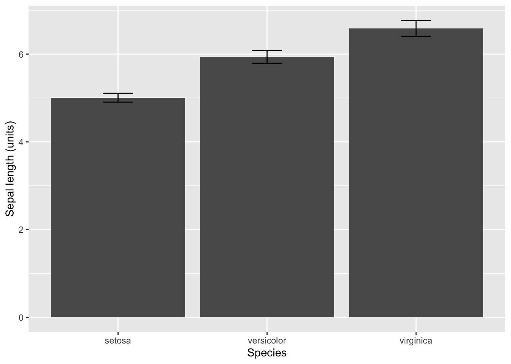
7 Assumptions
There are the following assumptions for an ANOVA.
- Each replicate sample or observation is independent and a random sample from the population of interest.
- All samples or observations are correctly categorized.
- The residuals are normal distributed.
-
The variances are equal among groups.
The first assumption is only assessed by carefully thinking about the methods. The second assumptions is almost always true unless the researcher was careless. The third and fourth assumptions are assessed by looking at aspects of the data. Below I demonstrate how to visually inspect these assumptions.
Let’s start with the assumption that the residuals are normally
distributed. The good news is that ANOVA is robust to this assumption.
In other words, we can still use an ANOVA when the residuals don’t
appear very normal. You can easily check this assumption with a Q-Q
plot. A Q-Q plot is a graph in which the observed residuals are plotted
against the predicted residuals is the data are normal. So, the
residuals are normal when the Q-Q plot is a straight line. Hang on for
just a second and I will show you how to easily create this plot.
The assumption of equal variances among the groups is important, and
ANOVA is not robust to this assumption. This one is easy because you
just need to compare the variances among the groups. Of course they will
not be perfectly equal, so we are really looking for cases in which the
variance is one group is 3 or 4 times larger or smaller than another
group.
Again, R is going to really help us out because it will create the plot that we need to assess these two assumptions. We just plot the fit from the lm() or aov() functions. R will prompt you to hit ENTER to advance through the graphs. Yes, it is really that easy!
We really care about the second and third graph. The second graph is the Q-Q plot. So, look for a straigt line (it will have a positive slope). The third graph is a plot of the square root of the standardized residuals and fitted values, but what you care about is that the line is relatively straight with a slope of zero.
plot(fit_lm)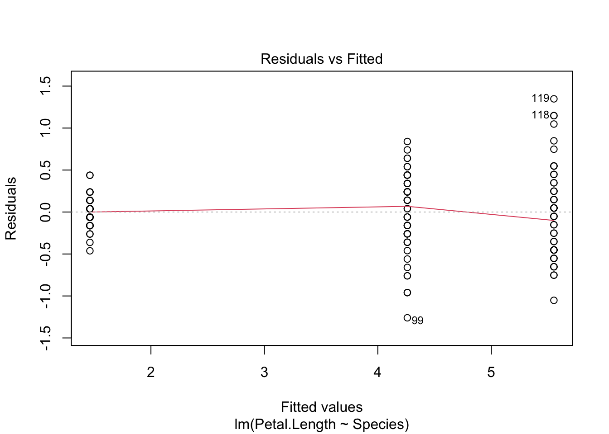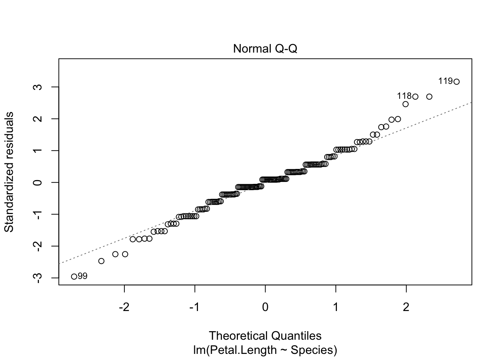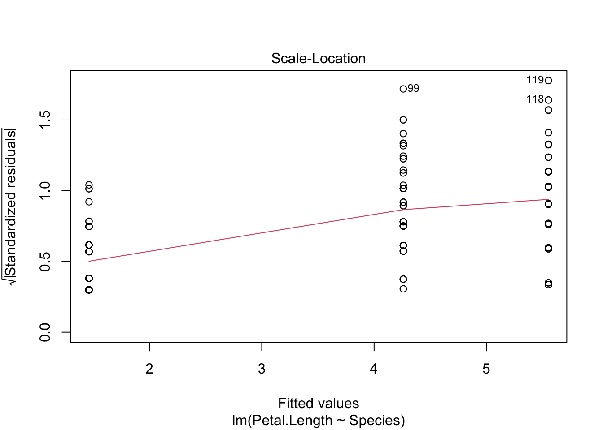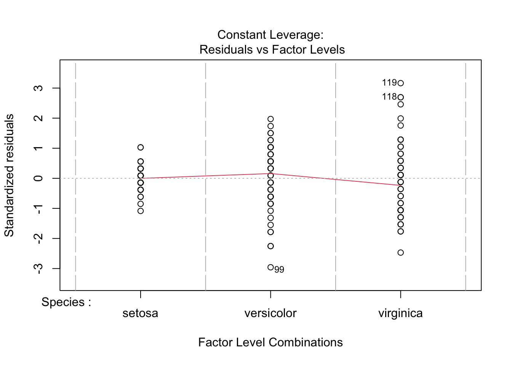
Both plots look good, and we can draw conclusion from our ANOVA with confidence. You will notice that the first group does have a smaller variance than the other two groups, but it is not so great to be of a concern.
8 Unplanned comparisons
If you have more than 2 groups and you reject the null hypothesis with an ANOVA, then you might want to know which groups differ from each other. The Tukey-Kramer test is an excellent way to for unplanned comparisons of all group combinations.
Unlike ANOVA, the Tukey-Kramer test is not robust to the assumption of normality. So, make sure to assess this assumption with a Q-Q plot!
We use the function TukeyHSD() to run a Tukey-Kramer test in R. However, it will only work if we use the aov fitted object (it doesn’ work with the lm fitted object). Again, it is that simple!
TukeyHSD(fit_aov)## Tukey multiple comparisons of means
## 95% family-wise confidence level
##
## Fit: aov(formula = Petal.Length ~ Species, data = iris)
##
## $Species
## diff lwr upr p adj
## versicolor-setosa 2.798 2.59422 3.00178 0
## virginica-setosa 4.090 3.88622 4.29378 0
## virginica-versicolor 1.292 1.08822 1.49578 09 More Complex Linear Models
You are now all set to analyze a wide range of more complex linear models. You only need to modify the formula in the function lm() or aov(). For example, let’s say I have two categorical variables called f1 and f2 and a response variable called g, then I would use the formula, g ~ f1 * f2 to run a two-factor ANOVA. The “*” tells R that you want to test the main effects of f1 and f2, and the interaction between f1 and f2.